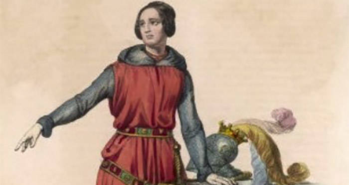
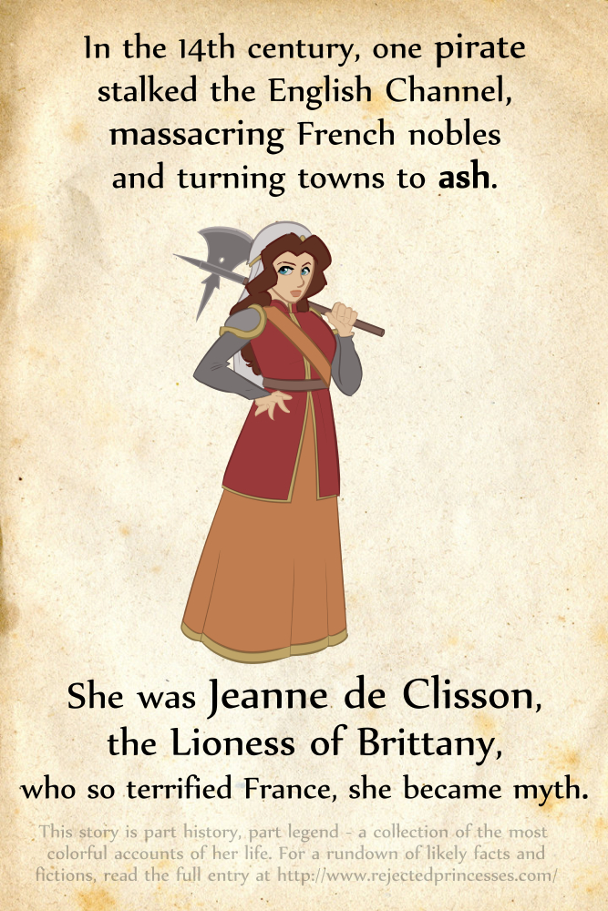

Jeanne de Clisson
Known for:
Making Liam Neeson look like a tool.
Actually retiring (Unlike Mr. Wick).
Successful at piracy.
Chosen Quote:
Unclear if the Lionness of Britanny, captain of The Black Fleet, mother of Olivier V "The Butcher" de Clisson, needs quotes.

You know the drill: English woman
marries French man out of true love in
the middle of the Hundred Years War.
But Plot twist: before being hippie, weed smoking communists, the French were jerks already. So Olivier de Clisson wasn't killed by English adversaries. French aristocrats betrayed and beheaded him.
But Plot twist: before being hippie, weed smoking communists, the French were jerks already. So Olivier de Clisson wasn't killed by English adversaries. French aristocrats betrayed and beheaded him.

So, 6 centuries before feminism, back
when women would be laughed at for giving their
opinion in a room full of men,
Miss Jeanne, 43 years old, sold
everything she had to get a fleet of
black painted warships.
Then she convinced the English crown to provide the crew (She probably had some of that Gal Gadot charisma)
Finally, she went on her merry way of pillage and piracy against the French.
Then she convinced the English crown to provide the crew (She probably had some of that Gal Gadot charisma)
Finally, she went on her merry way of pillage and piracy against the French.
Legend goes whenever her pirate crew* got a hold of a
French aristocrat, the crew would
hand them to her so she could personally
behead them herself with an axe. For
dramatic irony purposes, of course.
Legend also goes she had a bestie nicknamed "The Flame" because she carried a flaming sword to battle. Fun times, #RealFeminism.
* "Pirate crew" because Jeanne was oficially a traitor to both countries, so the crown's support came from "under the table"
Legend also goes she had a bestie nicknamed "The Flame" because she carried a flaming sword to battle. Fun times, #RealFeminism.
* "Pirate crew" because Jeanne was oficially a traitor to both countries, so the crown's support came from "under the table"
Historians measure a pirate's success by their
ability to go back to a civilized life and die of
natural causes. And it is a historical, unbiased fact
that most successful pirates are women.
Miss Jeanne, after years of terrorizing French vessels, lost a naval fight were she was capsized and lost a son. Without a male ego to be bruised by defeat, she abandoned piracy, remarried, and settled in Britanny (the land the English took from the French. She loved irony, it seems).
It is believed that she died at around 59 years of age, most likely of natural causes.
Miss Jeanne, after years of terrorizing French vessels, lost a naval fight were she was capsized and lost a son. Without a male ego to be bruised by defeat, she abandoned piracy, remarried, and settled in Britanny (the land the English took from the French. She loved irony, it seems).
It is believed that she died at around 59 years of age, most likely of natural causes.